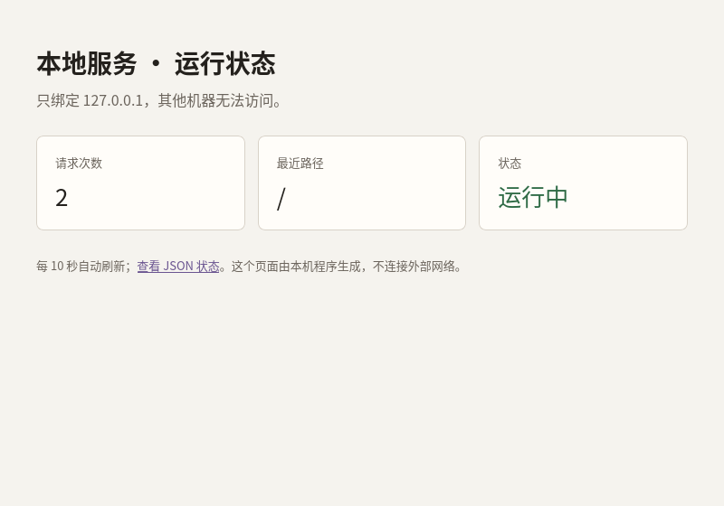
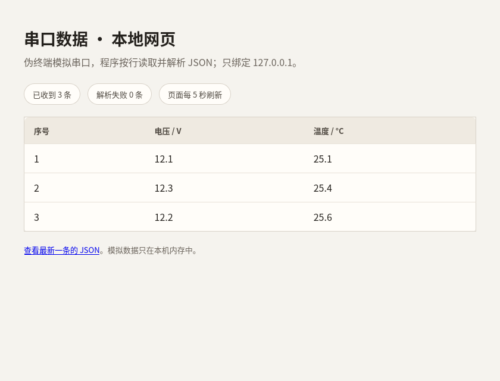

网络服务
这一部分讲程序之间在本机交换数据的基本方式：IP 与端口、TCP 与 UDP、 HTTP 与 JSON、本地服务、串口到网页与排错。要求是看懂：能跑通一个只 绑定回环地址的小服务，能读懂请求、响应与状态码，能把串口数据按行 读入并显示在网页上，遇到连接失败、端口占用、超时与 JSON 错误时能 判断问题在哪一层。例子只用 Python 标准库，不连接外部网络，不打开 真实串口，也不需要管理员权限。
本部分的例子只绑定 127.0.0.1，端口由系统分配或限定在
普通端口范围内；不监听 0.0.0.0，不使用 sudo，
不修改防火墙与系统网络设置，不访问外部主机，也不读取代理环境变量。
串口例子使用伪终端，不打开 /dev/ttyUSB0 等真实设备。服务
只在运行期间可达，按 Ctrl+C 停止后端口随即释放。不要把示例改成对
局域网或公网开放，也不要在其中放入密码、密钥或个人数据。
这一部分的例子都在 /tmp/other-basics/示例代码 下执行。
如果没有准备过练习目录，或者准备之后重启过电脑，先在课程文件夹里执行
下面几行：
rm -rf /tmp/other-basics
mkdir -p /tmp/other-basics
cp -r 示例代码 /tmp/other-basics/
cd /tmp/other-basics/示例代码
第一行会删除整个练习副本，路径不要改成自己的目录。复制完成后用
pwd 确认当前目录是 /tmp/other-basics/示例代码。
下面每课的命令会先进入该课自己的目录。
6.1IP 与端口
两台程序要交换数据，先要能互相找到。IP 地址标识主机，端口标识主机上的 某个程序；两者合起来，才是一次通信的终点。这一课只在本机范围内建立 连接，观察地址与端口各自的作用，不涉及外部网络。
回环地址
IPv4 把 127.0.0.1 保留为回环地址（loopback）。发往这个
地址的数据不经过网卡，也不离开本机，由操作系统直接送回本机。主机名
localhost 通常解析到它。IPv6 的回环地址是
::1；本课的例子使用 IPv4，创建套接字时指定
socket.AF_INET。IPv6 对应 socket.AF_INET6，
写法不同，用到时自行搜索。
回环地址只在本机有效，其他机器无法通过它访问本机。与它相对的是
0.0.0.0：绑定这个地址表示监听本机所有网络接口，局域网内
的其他机器也能连接。示例程序一律绑定 127.0.0.1；把
服务开到 0.0.0.0 属于对外提供访问，需要另行评估权限、
认证与防火墙，不在本课范围内。
端口与监听
端口号是 16 位整数，范围 0 到 65535。小于 1024 的端口在 Linux 上属于 特权端口，普通用户不能绑定；HTTP 默认的 80 与 HTTPS 默认的 443 都在 这个范围内。1024 到 49151 是注册端口，49152 到 65535 是动态端口， 常由系统临时分配。
服务端先创建套接字，再绑定地址与端口，然后调用 listen
进入监听状态；客户端用 connect 发起连接，服务端用
accept 接受。绑定端口 0 表示让操作系统分配一个当前空闲的
动态端口，实际端口用 getsockname() 读取。这样做不会与
机器上已有的服务冲突，也不需要预先挑一个数字。
SO_REUSEADDR 允许在连接关闭后较快地重新绑定同一端口，
避免上一次运行留下的状态阻止本次启动。本课端口由系统分配，这个选项
主要用于减少反复启动时的等待。
连接由四元组确定
一条 TCP 连接由四个值确定：客户端 IP、客户端端口、服务端 IP、服务端
端口。服务端监听的端口只有一个，但可以同时接受许多客户端；每个客户端
在自己的机器上有一个临时端口，因此四元组各不相同。客户端的临时端口
由 connect 时系统分配，服务端接受的连接用
getpeername() 可以看到对端的地址与端口。
同一个服务端端口上出现多个连接是正常的：区分它们的是客户端的地址与 端口，而不是服务端端口。反过来，如果客户端用同一个临时端口重复连接 同一服务端，四元组相同，就会与已有连接冲突；操作系统会自动选择 不同的临时端口。
例子：一次本机连接
下面的程序在一个线程里监听回环地址与系统分配的端口，在主线程连接 这个端口，打印双方看到的地址，再交换一行数据。服务端只接受一次连接， 交换完成后退出。
# 在回环地址上建立一次 TCP 连接，观察 IP 地址与端口。
import socket
import threading
ready = threading.Event()
result = {}
def serve_once():
server = socket.socket(socket.AF_INET, socket.SOCK_STREAM)
server.setsockopt(socket.SOL_SOCKET, socket.SO_REUSEADDR, 1)
server.bind(("127.0.0.1", 0))
server.listen(1)
result["address"] = server.getsockname()
ready.set()
conn, peer = server.accept()
with conn:
result["request"] = conn.recv(1024)
conn.sendall(b"pong\n")
server.close()
thread = threading.Thread(target=serve_once, daemon=True)
thread.start()
if not ready.wait(2):
raise SystemExit("服务端没有在 2 秒内启动")
host, port = result["address"]
print(f"监听地址：{host}:{port}")
with socket.create_connection((host, port), timeout=2) as client:
local_host, local_port = client.getsockname()
peer_host, peer_port = client.getpeername()
print(f"客户端本地地址：{local_host}:{local_port}")
print(f"客户端连接的对端地址：{peer_host}:{peer_port}")
client.sendall(b"ping\n")
reply = client.recv(1024)
thread.join(2)
print(f"服务端收到：{result['request'].decode().strip()}")
print(f"客户端收到：{reply.decode().strip()}")cd /tmp/other-basics/示例代码/6.1-IP与端口
python3 ip_port.py监听地址：127.0.0.1:34977 客户端本地地址：127.0.0.1:55450 客户端连接的对端地址：127.0.0.1:34977 服务端收到：ping 客户端收到：pong
两次运行得到的端口通常不同，这是系统分配的结果。服务端的监听端口
与客户端连接的对端端口相同；客户端的本地端口是另一个数字，它只在
这条连接存续期间使用。服务端打印的 peer 是客户端地址，
本例中没有使用，但可以用它区分不同的客户端。
你现在能做什么：说明回环地址与 0.0.0.0 的区别，
解释端口 0 的含义，写出服务端绑定、监听、接受与客户端连接的顺序，
并由一次连接读出双方的地址与端口。
6.2TCP 与 UDP
IP 负责把数据送到主机，端口负责找到主机上的程序。数据以什么形式 传输，由传输层协议决定。TCP 与 UDP 是最常用的两种：前者提供有连接、 可靠、按顺序的字节流，后者发送独立的数据报。这一课说明两者的差别， 以及程序里必须自己处理的消息边界。
TCP 的字节流
TCP 在通信前建立连接，通信结束后关闭连接。它保证发出的字节按顺序 到达，丢失时会重传，重复时会去重。对程序来说，TCP 连接像一个双向的 字节流：可以连续写入字节，也可以连续读出字节，但读出的分块大小与 写入的分块大小没有对应关系。
一次 sendall 写入的内容，可能被接收端分几次
recv 读到；多次写入的内容，也可能被一次
recv 合并读到。发送端调用 sendall 只表示
数据已交给操作系统，不表示对端已经收到。接收端必须循环读取，直到
收齐所需的数据，或者按协议定义的结束标志停止。
消息边界
TCP 不保留写入的边界。如果协议里一条消息是「两行数字」，接收端不能
假设一次 recv 正好得到两行；它要先累积字节，再按换行符
拆分，剩下的半行留到下一次读取。这叫按分隔符分帧。另一种做法是在
每条消息前写固定长度的字节数，接收端先读长度，再读正文；这叫按长度
分帧。两种做法都要求收发双方约定一致。
socket.makefile("rb") 把套接字包装成带缓冲的二进制文件
对象，readline() 会一直读到换行符或连接关闭。它省去了
手工维护缓冲区，但底层仍然是字节流，协议里的换行或长度约定不能省。
UDP 的数据报
UDP 不建立连接，每次 sendto 发送一个数据报，接收端每次
recvfrom 收到一个完整的数据报，边界保留。UDP 不保证
送达、不保证顺序，也不保证不重复；网络拥塞或缓冲区满时，数据报可能
被直接丢弃。单个数据报的大小受路径最大传输单元限制，超过时由 IP
分片，可靠性更差，通常应把单条消息控制在较小的范围内。
UDP 适合对延迟敏感、能容忍少量丢失的数据，例如高频状态广播、发现 协议与音视频流。需要可靠传输时，可以在应用层加序号、确认与重传， 但这已经是在自己实现一部分 TCP 的功能；如果业务要求每条消息都不丢、 顺序正确，直接用 TCP 更省事。
如何选择
选择协议先看消息语义。控制命令、配置下发、文件传输、需要按顺序处理 的请求，适合 TCP；周期性的传感器状态、允许丢一帧的实时数据，适合 UDP。TCP 的代价是连接管理、重传与队头阻塞：前一个字节没到，后面的 字节即使已经到了，也要等它补齐才能交给程序。UDP 的代价是程序自己要 处理丢失、重复与乱序。
在机器人项目里，常见的组合是：命令与配置走 TCP，高频状态走 UDP； 如果状态量不大、更新频率不高，全部用 TCP 也可以。无论选哪一种，都要 在协议里写清楚地址、端口、消息格式、分隔方式与超时处理，不能只靠 「一次发送对应一次接收」的假设。
例子：两行数据与两个数据报
第一个程序用 TCP 一次写入两行，服务端按换行符读出两行。第二个程序 用 UDP 发送两个数据报，服务端收到两个独立的数据报。两个程序都只 绑定回环地址。
# TCP 是字节流：一次发送的两行，接收端要按换行自己拆开。
import socket
import threading
ready = threading.Event()
result = {"address": None, "lines": []}
def serve_once():
server = socket.socket(socket.AF_INET, socket.SOCK_STREAM)
server.setsockopt(socket.SOL_SOCKET, socket.SO_REUSEADDR, 1)
server.bind(("127.0.0.1", 0))
server.listen(1)
result["address"] = server.getsockname()
ready.set()
conn, peer = server.accept()
with conn, conn.makefile("rb") as stream:
for _ in range(2):
result["lines"].append(stream.readline())
server.close()
thread = threading.Thread(target=serve_once, daemon=True)
thread.start()
if not ready.wait(2):
raise SystemExit("服务端没有在 2 秒内启动")
with socket.create_connection(result["address"], timeout=2) as client:
client.sendall(b"10,20\n30,40\n")
print("客户端：一次 sendall 发送两行")
thread.join(2)
for number, line in enumerate(result["lines"], 1):
print(f"服务端第 {number} 行：{line.decode().rstrip()}")cd /tmp/other-basics/示例代码/6.2-TCP与UDP
python3 tcp_stream.py客户端：一次 sendall 发送两行 服务端第 1 行：10,20 服务端第 2 行：30,40
服务端用 readline() 读到换行符为止，因此两次循环得到两行。
如果协议没有换行，服务端无法判断第一行在哪里结束；这时要么改用长度
前缀，要么用固定的消息格式。客户端写入一次并不等于服务端读出一次，
分帧规则才是边界的来源。
# UDP 保留数据报边界：两次发送对应两次接收。
import socket
import threading
ready = threading.Event()
result = {"address": None, "datagrams": []}
def serve_once():
server = socket.socket(socket.AF_INET, socket.SOCK_DGRAM)
server.bind(("127.0.0.1", 0))
result["address"] = server.getsockname()
ready.set()
for _ in range(2):
data, peer = server.recvfrom(1024)
result["datagrams"].append(data)
server.close()
thread = threading.Thread(target=serve_once, daemon=True)
thread.start()
if not ready.wait(2):
raise SystemExit("服务端没有在 2 秒内启动")
with socket.socket(socket.AF_INET, socket.SOCK_DGRAM) as client:
client.sendto(b"10,20", result["address"])
client.sendto(b"30,40", result["address"])
print("客户端：两次 sendto 发送两个数据报")
thread.join(2)
for number, data in enumerate(result["datagrams"], 1):
print(f"服务端第 {number} 个数据报：{data.decode()}")cd /tmp/other-basics/示例代码/6.2-TCP与UDP
python3 udp_datagram.py客户端：两次 sendto 发送两个数据报 服务端第 1 个数据报：10,20 服务端第 2 个数据报：30,40
两个数据报各自保留边界，服务端不需要按换行拆分。这个例子能稳定收到 两个数据报，是因为它们发往本机回环地址，路径上没有拥塞与丢包；换到 真实网络，程序必须考虑丢失、重复与乱序，不能把「发送两次就收到两次」 当作协议保证。
你现在能做什么：说明 TCP 与 UDP 的差别，解释为什么 TCP 需要 分帧而 UDP 保留数据报边界，按换行或长度拆分 TCP 消息，并为 UDP 消息 补充序号与超时处理。
6.3HTTP 与 JSON
HTTP 是建立在 TCP 之上的请求—响应协议。客户端发一个请求，服务端 回一个响应；请求与响应都由起始行、首部和可选的正文组成。JSON 是 常用的正文格式，用文本表示对象、数组、数字、字符串、布尔值与空值。 这一课用一个小服务说明两者的配合，以及服务端必须做的基本检查。
请求与响应
请求的第一行是方法、路径与协议版本，例如
GET /config HTTP/1.1；随后是首部，每行一个「名称: 值」；
空行之后是正文。响应第一行是协议版本、状态码与原因短语。首部里的
Content-Type 说明正文的格式，Content-Length
说明正文的字节数。HTTP/1.1 要求请求带 Host 首部，用来
指明要访问的主机与端口。
本课的客户端使用 http.client.HTTPConnection 直连
127.0.0.1。没有使用 urllib.request：它会读取
HTTP_PROXY、HTTPS_PROXY 等代理环境变量，
可能把本机请求转给代理，既增加外部依赖，也违背「只连本机」的边界。
需要抓取外部网页时再单独了解代理与 TLS；本课不涉及。
方法与状态码
方法是客户端希望执行的动作。GET 读取资源，不应改变
服务端状态；POST 提交数据，通常会改变状态；
PUT、DELETE、PATCH 分别表示
替换、删除与部分修改。本课的例子只使用 GET 与
POST，其余方法用到时再查。
状态码是三位数，第一位表示类别：2xx 成功，3xx 重定向，4xx 客户端 错误，5xx 服务端错误。常见的状态码如下。
| 状态码 | 含义 | 本课出现的位置 |
|---|---|---|
| 200 | 成功 | 读取配置、回显请求 |
| 204 | 成功，没有正文 | 浏览器请求图标 |
| 400 | 请求格式或参数不对 | Host 校验失败、JSON 不是对象 |
| 403 | 拒绝访问 | Origin 不在允许范围 |
| 404 | 找不到资源 | 路径不存在 |
| 408 | 请求超时 | 读正文超过 2 秒 |
| 411 | 缺少长度 | 没有 Content-Length |
| 413 | 正文过大 | 超过 64 KiB |
| 415 | 不支持的正文格式 | Content-Type 不是 JSON |
| 500 | 服务端内部错误 | 未预期的异常 |
| 503 | 服务暂不可用 | 并发连接已满 |
状态码要按语义使用。路径不存在返回 404，格式不对返回 400，正文过大 返回 413；把所有错误都返回 200 再在正文里写「失败」，会让客户端、 代理与日志都难以判断结果。错误正文也应保持简短，不把异常堆栈、 文件路径或请求内容原样返回。
首部
Host 是请求要访问的主机与端口。服务端可以据此拒绝不认识
的主机名，防止 DNS 重绑定：攻击者让自己的域名解析到
127.0.0.1，浏览器就会把请求发到本机服务，但
Host 仍是攻击者的域名。只接受
127.0.0.1:端口 与 localhost:端口，这类请求
会被拒绝。
Origin 表示请求由哪个页面发起。浏览器跨站提交表单时
会带上它；本课的服务只接受同源的 http://127.0.0.1:端口
与 http://localhost:端口，其他来源返回 403。没有
Origin 的请求（例如命令行客户端）可以放行，但还要靠
Content-Type 与正文校验把关。
Content-Type 说明正文格式。本课只接受
application/json，其他类型返回 415。校验时只比较分号前的
媒体类型，允许 application/json; charset=utf-8 这样的参数。
Content-Length 必须存在且为合理的整数，正文超过 64 KiB
返回 413，避免一次读入过多数据。
JSON
JSON 的值可以是对象、数组、字符串、数字、true、
false 与 null。对象的键必须用双引号，
字符串也必须用双引号；JSON 不允许注释，也不允许末尾多余的逗号。
Python 的 True、False、None
在 json.dumps 时分别写成 true、
false、null；反向解析时变回 Python 的
bool 与 None。
json.loads 解析失败会抛出 JSONDecodeError，
异常里带有行号与列号。解析成功也不代表数据可用：还要检查它是不是
对象、必需字段是否存在、字段类型是否正确。例如两个数相加的接口，
应先确认 a 与 b 都是数字，再计算；字符串
"3" 不能直接与数字相加。
服务端要做的检查
只绑定回环地址不等于安全。同一台机器上的其他程序可以连接这个端口，
浏览器里的网页也可能向它发请求。服务端至少要做五件事：校验
Host，校验 Origin，校验
Content-Type 与 Content-Length，限制正文
大小与并发数，设置套接字超时。错误响应只给固定文字，不回显路径、
异常或请求内容。
并发数用信号量限制。每个连接先申请一个名额，拿不到就立即返回 503， 不排队等待；处理完成后释放名额。这样即使大量连接同时到达，服务端 占用的线程数也有上限。套接字超时设为 2 秒，慢速发送的客户端不会 永久占用一个处理线程。这些措施只适用于本机的小服务；对外服务还需要 认证、TLS、反向代理与更完整的限流，不在本课范围。
例子：GET 与 POST
下面的程序启动一个 HTTP 服务，先用 GET /config 读取配置，
再用 POST /echo 提交两个数并取回和，然后请求一个不存在的
路径，最后用错误的 Content-Type 提交一次。每次请求都新建
一条 HTTPConnection，超时 2 秒，结束后关闭。
客户端部分如下。完整程序还包括服务端的并发限制、Host 与 Origin 校验、
正文校验与关闭流程，放在
示例代码/6.3-HTTP与JSON/http_json.py。
def call(method, path, payload=None, content_type="application/json"):
body = None
headers = {}
if payload is not None:
body = json.dumps(payload).encode("utf-8")
headers["Content-Type"] = content_type
connection = HTTPConnection(host, port, timeout=2)
try:
connection.request(method, path, body=body, headers=headers)
response = connection.getresponse()
return response.status, response.getheader("Content-Type"), response.read()
finally:
connection.close()
服务端的来源检查与正文检查如下。完整文件里，LimitedServer
在构造时记录允许的 Host，并用信号量限制同时处理的连接数；
Handler 的 setup 设置 2 秒超时。
def host_ok(self):
host = self.headers.get("Host", "")
if host not in self.server.allowed_hosts:
self.send_json(400, {"error": "bad host"})
return False
return True
def origin_ok(self):
origin = self.headers.get("Origin")
if origin is None:
return True
allowed = {
f"http://{HOST}:{self.server.server_address[1]}",
f"http://localhost:{self.server.server_address[1]}",
}
if origin not in allowed:
self.send_json(403, {"error": "bad origin"})
return False
return True content_type = self.headers.get("Content-Type", "")
if content_type.split(";")[0].strip().lower() != "application/json":
self.send_json(415, {"error": "application/json required"})
return
raw_length = self.headers.get("Content-Length")
if raw_length is None:
self.send_json(411, {"error": "Content-Length required"})
return
try:
length = int(raw_length)
except ValueError:
self.send_json(400, {"error": "bad Content-Length"})
return
if length < 0 or length > MAX_BODY:
self.send_json(413, {"error": "body too large"})
return
try:
data = json.loads(self.rfile.read(length).decode("utf-8"))
except socket.timeout:
self.send_json(408, {"error": "request timeout"})
return
except (UnicodeDecodeError, json.JSONDecodeError):
self.send_json(400, {"error": "invalid JSON"})
return
if not isinstance(data, dict):
self.send_json(400, {"error": "JSON object expected"})
return
a, b = data.get("a"), data.get("b")
if not isinstance(a, (int, float)) or not isinstance(b, (int, float)):
self.send_json(400, {"error": "a and b must be numbers"})
return
self.send_json(200, {"received": data, "sum": a + b})cd /tmp/other-basics/示例代码/6.3-HTTP与JSON
python3 http_json.pyGET /config
状态：200
Content-Type：application/json; charset=utf-8
camera = A，exposure_us = 5000，enabled = True
POST /echo
状态：200
发送：{"a": 3, "b": 4}
收到：{"received": {"a": 3, "b": 4}, "sum": 7}
GET /missing
状态：404
错误：{"error": "not found"}
POST /echo（Content-Type 不是 JSON）
状态：415
服务线程已退出：True
剩余线程数：1
前两次请求成功：GET /config 返回 JSON 配置，
POST /echo 返回原始对象与两数之和。第三次请求的路径不
存在，返回 404 和固定的错误正文。第四次请求把
Content-Type 设为 text/plain，服务端在解析
正文之前就返回 415，没有读取或执行请求内容。最后两行说明服务线程
已经退出，进程里只剩主线程。
你现在能做什么：说明 HTTP 请求与响应的组成，按语义选择方法与 状态码，读写 JSON 并校验字段类型，在本地服务里检查 Host、Origin、 Content-Type 与正文长度，并正确关闭连接与线程。
6.4本地服务
前面的例子跑完就退出。实际使用时，程序往往要常驻，持续接受请求、 保存状态并返回页面。这一课把 HTTP 服务写成一个可长期运行的小程序： 默认自检一次后退出，加参数才常驻；页面显示请求次数与最近路径， 另有一个 JSON 状态接口。
从脚本到常驻服务
常驻服务的主循环是 serve_forever()，它不断接受连接，
直到收到停止信号。服务端对象在构造时绑定地址与端口，处理函数按请求
方法分派：do_GET 处理读取，do_POST 处理提交。
本课的服务只有两个读取路径：/ 返回 HTML 页面，
/status 返回 JSON 状态；其他路径返回 404。
页面由程序内的字符串模板生成，样式写在页面里，不引用外部图片、 字体或脚本。这样即使机器没有网络，页面也能完整显示。状态保存在 服务端对象上，用锁保护：每次请求增加计数，记录最近访问的路径， 再读取一份快照用于渲染。计数与最近路径只在本进程内，重启后归零。
并发上限与超时
ThreadingHTTPServer 为每个连接启动一个线程。连接数没有
上限时，大量慢速连接会耗尽线程与内存。示例用
BoundedSemaphore(4) 限制同时处理的连接数：申请不到名额
的连接立即收到 503，然后关闭；处理线程结束时释放名额。名额的申请与
释放在 process_request 与
process_request_thread 两处配对，异常路径也不会漏掉释放。
def process_request(self, request, client_address):
if not self.slots.acquire(blocking=False):
try:
request.settimeout(2)
request.sendall(b"HTTP/1.0 503 Service Unavailable\r\n"
b"Content-Length: 0\r\nConnection: close\r\n\r\n")
finally:
self.shutdown_request(request)
return
try:
super().process_request(request, client_address)
except Exception:
self.slots.release()
raise
def process_request_thread(self, request, client_address):
try:
super().process_request_thread(request, client_address)
finally:
self.slots.release()
每个连接在 setup 里设置 2 秒超时。客户端连上后不发送
完整请求，读取会在 2 秒后抛出 socket.timeout，处理线程
随之结束，不会一直等待。超时值要按业务调整：页面加载慢、上传文件大
时需要更长；只返回小段 JSON 的接口可以更短。
错误处理与响应首部
处理函数对不认识的路径只返回 not found，不把请求路径写回
响应，也不返回异常文本。这样即使有人构造特殊路径，响应里也不会出现
可用于探测的文件名或内部信息。真正的错误详情应写到本机日志，并避免
记录密码、令牌与个人数据。
HTML 响应带有几个安全首部：Cache-Control: no-store 禁止
缓存；X-Content-Type-Options: nosniff 禁止浏览器猜测类型；
X-Frame-Options: DENY 禁止被其他页面嵌入；
Referrer-Policy: no-referrer 不发送来源信息；
Content-Security-Policy 限制页面只能使用自身的内联样式，
不能加载脚本、图片或表单提交。页面本身没有脚本，这些首部是额外的
防线。
运行与查看
不带参数运行时，程序启动服务、请求一次页面与状态接口、打印结果，
然后关闭服务并退出。加 --serve 才常驻；端口可以省略，
由系统分配，也可以给一个 1 到 65535 之间的数字。下面的截图是常驻
模式下的页面，请求次数为 2，最近路径为 /。
cd /tmp/other-basics/示例代码/6.4-本地服务
python3 local_service.py
python3 local_service.py --serveGET / 状态：200，类型：text/html; charset=utf-8
页面标题：本地服务 · 运行状态
GET /status 状态：200，类型：application/json; charset=utf-8
{"hits": 2, "message": "服务运行正常", "ok": true}
服务线程已退出：True

常驻模式启动后，终端会打印服务地址，例如
http://127.0.0.1:41234/。把这个地址输入本机浏览器即可
打开页面；按 Ctrl+C 停止，终端会打印停止信息并退出。端口由系统分配，
每次运行可能不同，以终端打印的地址为准。
你现在能做什么：写出一个带页面与 JSON 接口的本地服务，用信号量 限制并发、用超时限制慢连接，按语义返回状态码与安全首部，并在自检模式 与常驻模式之间切换。
6.5串口到网页
串口是设备与计算机之间常见的连接方式。传感器、单片机与驱动器通过 串口按字节发送数据，计算机按约定解析。这一课用伪终端模拟一个串口， 把读到的 JSON 行显示在本地网页上；不打开真实设备，也不依赖串口 权限。
串口与伪终端
在 Linux 上，串口设备表现为 /dev/ttyUSB0、
/dev/ttyACM0 这样的设备文件。打开设备时要设置波特率、
数据位、校验位与停止位，常见组合写作 8N1：8 个数据位、无校验、
1 个停止位。两端的这些设置必须一致，否则读出的字节会错位。真实设备
还需要相应的访问权限；权限应按实验室规定配置，不要用
sudo 运行程序，也不要把设备改成所有人可读写。
伪终端（pty）由操作系统提供一对相连的文件描述符：主端写入的数据，
从端可以读出，行为接近串口。pty.openpty() 创建这一对，
os.ttyname() 取得从端的设备路径。程序把从端设为原始
模式（raw），关闭行缓冲、回显与特殊字符处理，按字节读写。这样既能
演示串口的读写方式，又不会碰真实硬件与当前终端。
def start_bridge():
master_fd, slave_fd = pty.openpty()
path = os.ttyname(slave_fd)
tty.setraw(slave_fd)
read_fd = os.open(path, os.O_RDWR | os.O_NOCTTY)
tty.setraw(read_fd)
os.close(slave_fd)
return master_fd, read_fd, path
os.O_NOCTTY 防止这个设备成为进程的控制终端，避免终端
信号干扰程序。主端留给模拟发送线程写入，从端由读取线程打开；两个
线程通过停止事件与超时退出，最后关闭文件描述符。
按行读取
串口一次到达的字节数不固定：可能只有半个 JSON，也可能一次到达好几条
记录。读取线程用 select 等待可读，最多等 0.2 秒；有数据
就追加到缓冲区，再按换行符切分。最后一段没有换行时留在缓冲区，等下一
批数据到达。停止事件置位后，循环在 0.2 秒内退出，不会卡在读取上。
def read_lines(server, read_fd, ready, stop):
buffer = b""
while not stop.is_set():
try:
readable, _, _ = select.select([read_fd], [], [], 0.2)
except (OSError, ValueError):
break
if not readable:
continue
try:
chunk = os.read(read_fd, 1024)
except OSError:
break
if not chunk:
break
buffer += chunk
while b"\n" in buffer:
line, buffer = buffer.split(b"\n", 1)
if not line.strip():
continue
try:
record = json.loads(line.decode("utf-8"))
if not isinstance(record, dict):
raise ValueError
for key in ("seq", "voltage", "temperature"):
if not isinstance(record.get(key), (int, float)):
raise ValueError
except (UnicodeDecodeError, json.JSONDecodeError, ValueError):
with server.lock:
server.bad_lines += 1
continue
with server.lock:
server.records.append(record)
if len(server.records) >= len(RECORDS):
ready.set()
解码使用 UTF-8。解码失败、JSON 解析失败或字段类型不对的行计入
bad_lines，不进入记录列表；合法记录追加到共享列表，
由锁保护。读取线程不直接操作网页，只更新数据；网页在处理请求时复制
一份快照，避免读写同一列表。
校验与网页显示
每条记录要求是对象，并包含 seq、voltage 与
temperature 三个数值字段。缺少字段、类型不对或不是对象
都按坏行处理。网页把记录渲染成表格，显示已收到的条数与解析失败的
条数；每 5 秒自动刷新，另有一个 /latest 接口返回最新一条
的 JSON。
网页内容由程序生成，数值用定点格式输出；如果以后要显示设备发来的 字符串，必须先做 HTML 转义，否则字符串里的标签会被浏览器当成结构。 页面不加载外部资源，样式写在页面内，服务只绑定回环地址。表格中的 数据只保存在内存里，程序退出即丢失；需要保存时再写入文件或数据库， 并注意不要记录设备序列号等可识别信息。
运行与查看
不带参数运行时，程序创建伪终端、启动模拟发送线程与读取线程、等待
三条记录、请求网页与 JSON 接口，然后关闭全部线程与文件描述符。
加 --serve 常驻，终端会打印伪终端路径与服务地址。
下面的截图是常驻模式下的页面。
cd /tmp/other-basics/示例代码/6.5-串口到网页
python3 serial_to_web.py
python3 serial_to_web.py --serve模拟串口路径：/dev/pts/4
GET /latest 状态：200，类型：application/json; charset=utf-8
{"bad_lines": 0, "count": 3, "latest": {"seq": 3, "temperature": 25.6, "voltage": 12.2}}
GET / 状态：200，类型：text/html; charset=utf-8
页面标题：串口数据 · 本地网页
串口读取线程已退出：True
服务线程已退出：True

/dev/pts/5 等其他编号；三条记录来自程序内的模拟
数据，不是真实设备。常驻模式下，模拟线程写完三条记录就结束，页面仍可刷新，读取线程继续 等待新的数据。按 Ctrl+C 停止时，程序先置位停止事件，等待读取与写入 线程退出，关闭伪终端的文件描述符，再关闭服务并等待服务线程结束。 这一步不能省：只结束主线程而留下读取线程，文件描述符与端口可能一直 被占用。
def stop_all(server, master_fd, read_fd, stop, reader, writer, server_thread=None):
stop.set()
reader.join(2)
writer.join(2)
for fd in (read_fd, master_fd):
try:
os.close(fd)
except OSError:
pass
if server_thread is not None:
server.shutdown()
server.server_close()
if server_thread is not None:
server_thread.join(2)你现在能做什么：说明串口与伪终端的区别，按行读取不定长数据并 处理半条记录，校验 JSON 字段后更新共享状态，把状态显示在本地网页上， 并在停止时按顺序关闭线程、文件描述符与服务。
6.6排错
网络程序出错时，现象往往只有一句「连不上」或「没有反应」。要定位 问题，需要分清错误发生在哪一层：地址与端口是否正确、服务是否在监听、 连接是否建立、对方是否回应、回应是否符合协议、正文是否能解析。 这一课在本机制造五种常见错误，观察异常类型与判断方法。
连接被拒绝
ConnectionRefusedError 表示连接请求到达了目标主机，但目标
端口没有进程监听，或者监听进程拒绝接受。对本机服务，先确认服务是否
已经启动、端口是否与客户端填写的一致。若服务刚启动就连接，也可能在
监听建立之前失败；等待就绪信号或稍后重试。
示例先绑定一个端口但不调用 listen，再连接这个端口。绑定
保证端口在这段时间内不会被其他进程占用，连接必然被拒绝；探测套接字
在连接尝试结束前保持打开，避免出现「关闭后被别人抢占」的竞态。
端口已被占用
同一个地址与端口只能被一个套接字绑定（设置了重用选项时另有规则）。
第二次绑定会抛出 OSError，Linux 上的错误号是 98，符号名
EADDRINUSE。处理方法是换一个端口，或者先停止占用该端口
的进程。查找占用者可以用系统自带的 ss -ltn 查看监听端口；
查看进程需要额外权限，按实验室规定执行，不要随意结束不认识的进程。
连接成功但没有回应
连接建立后，客户端设置了 0.2 秒的接收超时，对端没有发送数据，读取
抛出 TimeoutError。这与连接被拒绝不同：连接已经建立，
说明地址与端口正确、服务在监听，问题在协议层或应用层。检查对端是否
按约定发送、是否在等待客户端先发、消息分隔是否正确，以及双方是否
使用了不同的协议。
超时时间要按场景设置。过短会把正常的慢响应误判为故障，过长会让程序 在真正故障时等待很久。示例用 0.2 秒是为了快速演示；实际服务常用几秒， 并配合重试与退避。
HTTP 状态与 JSON 错误
HTTP 请求得到 404，说明连接与协议都正常，服务在运行，只是路径不存在。
404 是正常的响应，不是连接失败；不要把它与
ConnectionRefusedError 混为一谈。先看状态码，再看正文，
最后看服务端日志。
JSON 解析失败会抛出 JSONDecodeError，异常带有行号与列号。
常见原因是数据被截断、末尾多了逗号、使用了单引号或注释。先确认发送端
写出的内容完整，再确认接收端按正确的分隔方式拼接；不要用字符串截取
代替解析。
例子：五种错误
下面的程序依次制造上述五种情况，打印异常类型与判断。所有操作都在 本机完成，不连接外部主机，不经过代理。
# 在本机依次制造五种常见错误，观察异常类型与判断方法。
# 只使用 127.0.0.1，不连接外部主机，不经过代理。
import errno
import json
import socket
import threading
from http.client import HTTPConnection
from http.server import BaseHTTPRequestHandler, ThreadingHTTPServer
HOST = "127.0.0.1"
def connection_refused():
probe = socket.socket(socket.AF_INET, socket.SOCK_STREAM)
probe.bind((HOST, 0))
port = probe.getsockname()[1]
try:
socket.create_connection((HOST, port), timeout=1)
except ConnectionRefusedError as error:
print("1. 连接一个没有监听的端口")
print(f" 异常：{type(error).__name__}")
print(" 判断：本机没有进程监听这个端口，服务可能没有启动。")
finally:
probe.close()
def address_in_use():
first = socket.socket(socket.AF_INET, socket.SOCK_STREAM)
first.bind((HOST, 0))
address = first.getsockname()
second = socket.socket(socket.AF_INET, socket.SOCK_STREAM)
try:
second.bind(address)
except OSError as error:
print("2. 同一个端口绑定两次")
print(f" 异常：{type(error).__name__}")
code = errno.errorcode.get(error.errno, "?")
print(f" errno：{error.errno}（{code}）")
print(" 判断：端口已被占用，换一个端口或先停止占用它的进程。")
finally:
second.close()
first.close()
def read_timeout():
server = socket.socket(socket.AF_INET, socket.SOCK_STREAM)
server.bind((HOST, 0))
server.listen(1)
client = socket.create_connection(server.getsockname(), timeout=1)
client.settimeout(0.2)
try:
client.recv(1)
except TimeoutError as error:
print("3. 连接成功但对方不回应")
print(f" 异常：{type(error).__name__}")
print(" 判断：连接已建立，但 0.2 秒内没有收到数据；"
"检查对端是否发送、协议是否一致。")
finally:
client.close()
server.close()
class NotFoundHandler(BaseHTTPRequestHandler):
def do_GET(self):
self.send_response(404)
self.send_header("Content-Length", "0")
self.end_headers()
def log_message(self, fmt, *args):
pass
def http_not_found():
server = ThreadingHTTPServer((HOST, 0), NotFoundHandler)
server.daemon_threads = False
thread = threading.Thread(target=server.serve_forever, daemon=True)
thread.start()
host, port = server.server_address
connection = HTTPConnection(host, port, timeout=2)
try:
connection.request("GET", "/missing")
response = connection.getresponse()
response.read()
print("4. 请求一个不存在的 HTTP 路径")
print(f" 状态码：{response.status}")
print(" 判断：服务在运行，路径写错了；404 是正常响应，"
"不是连接失败。")
finally:
connection.close()
server.shutdown()
server.server_close()
thread.join(2)
print(f" 服务线程已退出：{not thread.is_alive()}")
def bad_json():
try:
json.loads('{"a": 1,')
except json.JSONDecodeError as error:
print("5. 解析一段不完整的 JSON")
print(f" 异常：{type(error).__name__}")
print(f" 位置：第 {error.lineno} 行第 {error.colno} 列")
print(" 判断：数据不完整或被截断；先检查发送端与分隔方式。")
if __name__ == "__main__":
connection_refused()
address_in_use()
read_timeout()
http_not_found()
bad_json()cd /tmp/other-basics/示例代码/6.6-排错
python3 diagnose.py1. 连接一个没有监听的端口 异常：ConnectionRefusedError 判断：本机没有进程监听这个端口，服务可能没有启动。 2. 同一个端口绑定两次 异常：OSError errno：98（EADDRINUSE） 判断：端口已被占用，换一个端口或先停止占用它的进程。 3. 连接成功但对方不回应 异常：TimeoutError 判断：连接已建立，但 0.2 秒内没有收到数据；检查对端是否发送、协议是否一致。 4. 请求一个不存在的 HTTP 路径 状态码：404 判断：服务在运行，路径写错了；404 是正常响应，不是连接失败。 服务线程已退出：True 5. 解析一段不完整的 JSON 异常：JSONDecodeError 位置：第 1 行第 9 列 判断：数据不完整或被截断；先检查发送端与分隔方式。
五种情况对应不同的层：第一种是端口没有监听，第二种是端口已被占用， 第三种是连接建立后没有数据，第四种是 HTTP 层返回了明确的状态码， 第五种是正文解析失败。排错时按这个顺序逐层检查，比反复重启程序更有 效。每处理完一种情况，都要确认相关线程与套接字已经关闭，避免下一次 运行时被上一次的残留状态干扰。
你现在能做什么：区分连接被拒绝、端口占用、接收超时、HTTP 错误 状态与 JSON 解析失败，按地址、监听、连接、协议、正文的顺序定位问题， 并在排错后确认线程与套接字已经释放。